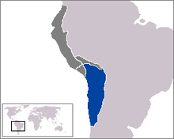

De: La Frikipedia, la enciclopedia extremadamente seria.
De: La Frikipedia, la enciclopedia extremadamente seria. De: La Frikipedia, la enciclopedia extremadamente seria.

|
Abandonado
Este artículo marcado como en construcción lleva más de un mes sin que alguien lo edite, así que eres libre de modificarlo si sientes que puedes mejorarlo. Considera también quitar esta plantilla o reemplazarla por otra más específica. |
| De la serie imperios antiguos: | |||||
| Tawantinsuyu Tawantinmío | |||||
| |||||
| Lema: añapaq concheq tumadrec | |||||
| Himno: kunan tuta takisunchik ¡¡Oh my Wiracocha!! | |||||
| 
| |||||
| Capital(es) | Machu Picchu | ||||
| Mayor ciudad | Cuzco la cual les seria arrebatada civilizada y pacificamente por Imperio Español | ||||
| Lenguas oficiales | quechua, aimara, algo de chino e incluso catalán | ||||
| Religión oficial | Wiracochismo | ||||
| Gobierno | Monarkia Inkaica | ||||
| InkaMaster | Tupac Youpanki XII | ||||
| Fecha de fundación | -1400 y tantos | ||||
| Caída | Cuando se contagiaron de sida | ||||
| Edad de oro | Un segundo antes de la conquista | ||||
| Periodo de Estancamiento o reseción | Tras la conquista por parte de España | ||||
| Máxima Extensión | Casi toda sudamérica incluyendo austria y la antártida | ||||
| Forma de economía | No mucha ya que usaban las toneladas de oro que tenían para lanzarlas al mar o crear accesorios | ||||
| Estados que se despacho | Peru, Bolivia,Ecuador,Chile, Argentina y otros... | ||||
| Población calculada | Se desconoce, gran parte vivían bajo las rocas escondiéndose del Imperio. | ||||
| Moneda | Intercambiaban objetos. incluyendo su perro e incluso su mujer | ||||
| Zona horaria | muchos quedaban ciegos por ver el sol | ||||
| Legado(s) | la | ||||
| ¿Por que se vino abajo? | tras la muerte de su líder muchos se suicidaron y otros evolucionaron a Emo | ||||
| | |||||
«qukiap ñepaq auraki añikaq»
~ Cuidadano Inca expresándose
«manchaysapa gilipoñaq»
~ Inca a otro Inca
El imperio inca, mas conocido como tahuantin-suyo, abarcaba gran parte de sudamerica y habrían conquistado toda américa de no ser por culpa de las llamas, sus peores enemigos.
También conquistaron parte de Asia y se rumorea de sus ancestros fueron habitantes de atlantida ya que los primeros incas surgieron de las profundidades del mar aunque estos afirman que fueron defecados por su gran dios wiracocha quien al sentirse culpable por su creación culpo a Buda este le respondió abalanzándose sobre el y así finalmente wiracocha murió aplastado, esto hizo que los incas adorasen al sol (su nuevo Dios).
El tawantinsuyo posee 4 facciones Noesuyo, Siesuyo, Tawantinmio, y Chuchaysuyo. conforman el imperio incaico.
El imperio inca fue al principio una civilización poco avanzada ya que lo mas inteligente que sabián hacer era golpear una roca con otra partiendo esta en dos y deleitándose con el resultado, pero esto cambiaria con la llegada de sus fundadores, quienes le pusieron nombre al imperio y desarrollaron una cultura autóctona.
Tras la muerte de wiracocha a manos de Buda el Sol se convirtió en el nuevo dios inca y como los incas consideraban que esta nueva deidad seria menos problemática por ello le crearon un templo, lo que no sabían era que el sol los observaba desde arriba y decidió compensarlos por su leal devoción por lo que creó dos personajes, Manco Capack y su esposa Mamá Okllo (hay que resaltar que también era su propia hermana). Los incas quedaron indignados y decidieron crucificar a esta pareja por incesto, sin embargo antes de llevar a cabo la ejecución el verdugo descubrio algo que lo haría cambiar de decisión (Manco Capack era gay), el pueblo quedo deslumbrado con los encantos de manko fue tanto así que lo nombraron emperador. Así fue como se creó el Imperio con el nombre de Tawantinmío.
No muy lejos de allí existía una tribu llamada los chancapiedras quienes de destacaban por la gran habilidad de levantar piedras de gran tamaño y también por el tamaño de su miembro, lo cual fue suficiente para que los Incas decidieran conquistarlos por esta razón reunieron un un gran ejercito liderado por Manco Capack. Al primer intento manco tuvo que ordenar la retirada ya que sus tropas morián a causa de las piedras que les arrojaban, fue entonces cuando manko desidió inventar su primer arma de destrucción masiva (el palo con caca) pero fue inútil frente a las piedras del ejercito rival y cuando todo parecía perdido el ejército inca recibió ayuda divina por parte del sol que le dijo a mando que atara una piedra a un palo y usara un pedazo de madera para hacerla de escudo. Y así fue como el ejército mejor armado ahora con escudos derrotaron a los chancapiedras quienes fueron esclavizados o condenados a hacerle favores sexuales al emperador.
A partir de ese comento en Imperio Inca inicio una serie de conquistas expandiendo su imperio el cual abarcaba casi toda sudamérica conquistando diversas tribus incluyendo una llamada Tawantinsuyo, sin embargo a pesar del gran éxito de tawantinmío ocurrió lo impensable al parecer en una de sus visitas anuales de manco capack al médico le detectaron sida, por lo que no pasaría mucho tiempo para el fallecimiento de mankito. Tras la muerte del emperator hubo una gran incertidumbre en el pueblo por lo que decidieron realizar las primeras elecciones democráticas la cual ganó un inca llamado Pachakutec líder del partido Tawantinsuyo y ese fue el nombre que adquirió el imperio inca y además fue el primer monarca hetero.
Con el gobierno de mierdakutec pachakutec hubo una gran revolución, y múltiples avances en cuanto a tecnología también el imperio se expandiría mucho, ocupando chile y bolivia, pero uno de los logros mas destacados fue la invasión a taiwan (algunas personas negaran esto pero nuestros expertos frikipedistas cuentan con una máquina del tiempo y lo vieron todo, no como otras paginas poco inteligentes). De allí taiwán adquirió su nombre ya que desdiende de Taiwantinsuyo Sin embargo no paso mucho tiempo para que los taiwaneses, se rebelaran y los incas fueron expulsados al mar.
También conquistaron colombia pero luego de veinte años fueron exiliados por los paisa quienes no los dejaban dormir por la noche ya que ponían ballenato a máximo volumen, lo mismo intentaron en venezuela pero fueron aplacados por el hampa y por ende expulsados, en brasil tampoco lo lograrían ya que tenian miedo a la tribu caníbal de los ronaldinhokemotiks. Así que sigueron los intentos de conquista hasta que pachakutec murió de 47 masturbadas.
Tras la inesperada muerte de Pachakutec de 47 masturbadas, se nombró a su sobrino nuevo monarca con el título de Emperador Tupac Youpanki I, quien fundo cuzco que fue como las vegas pero versión inca y bautizada como la cuidad del pecado donde los incas fornicaban y apostaban su dinero en las carreras de llamas. La gran ambición de Tupac fue tanta que conquisto a la cultura nazca y estos en su desesperación escribieron groserías en el suelo (Hoy en día conocidas como las líneas de nazca).
Poco a poco los incas se arrastraron a la inmoralidad y empezaron a entrar en el mundo de las drogas y el alcohol cayendo en pecado y dejando de rendirle tributo al sol. Ya que más adelante serian visitados por los anunnakis quienes hicieron un trato con los incas (oro por tecnología) y ademas les advirtieron que si no avanzaban tecnológica mente serian conquistados, pero los incas ignoraron la advertencia. Al ver que los incas eran muy hijos de puta los anunnakis se llevaron gran parte del oro y como pago arrojaron a Tupac Yupanki por un acantilado para despues marcharse a su planeta.
Un vez más los incas tuvieron que ejercer su democracia y votar por su candidato, quien sería Huayna Capac un leñador y artesano así como también vendedor de pornografía incaica. Huayna Capac se sentía muy feliz tras ser elegido monarca del imperio, pero un día antes de llevarse a cabo el nombramiento del monarca este murió asesinado por una llama (esto significaría una declaración de guerra).
Tras la dramática muerte de Huayna Capac, asumio el poder el Huascar la mano derecha de Huayna (digo mano derecha porque era gay y le hacía favores sexuales a huayna capac previo a su muerte). Pero su campaña era un fiasco y perdió las elecciones presidenciales siendo derrotado por Atahualpa, finalmente el sueño humedo de atahualpa se haría realidad y mientras se celebraba el nombramiento de Atahualpa como monarca llegaron unos forasteros con muy buenas intenciones.
Francisco Pizarro (un judio español en busca honor y reconocimiento por parte de la corona) llego con sus tropas a lo que seria una ciudad incaica, rapida mente establecienron acuerdos comerciales (oro por un espejo viejo, de baja calidad y echo en China) Atahualpa demostrando siempre su gran astucia para los negocios acepto el trato, sin embargo el acuerdo no duraria mucho ya Atahualpa descubrio algo ¡¡TERRIBLE!! (era feo) cayendo este en una gran depresión, Por otro lado las Tropas de Pizarro al ver La bandera del Imperio Inca con los colores del arcoíris y pensaron que se trataba de una tribu Gay, así que Pizarro envió una carta con destino a España a sus grandes amigos conocidos como los inquisidores y para mejorar un poco sus ingresos economicos secuestro a Atahualpa para ver si obtenía algo de dinero y también estableció una colonia pues no quería envidiarle nada a su amigo y rival Hernán Cortés.
Finalmente asesinaron a Atahualpa por orden de Chabelo que pese a su avanzada edad era miembro muy valioso para el escuadrón, ya se había preparado todo para el golpe final pero cuando las tropas llegaron a cuzco solo encontraron incas muertos o por diarrea o por tuberculosis que se les había contagiado por tener sexo contacto con tropas españolas y como quedaron vivos algunos niños y mujeres, los soldados recordaron que no habian visto una mujer por años y como tenian en frente a las cholas en su desesperacion terminaron tirándoselas (los curas se tiraron a los niños).
Autor(es):